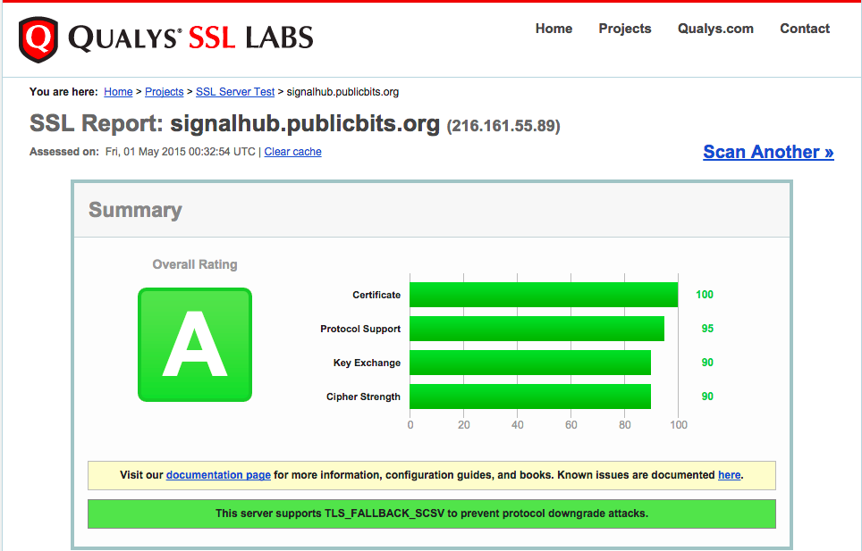

How I set up HTTPS with Nginx, April 2015
I finally got a wildcard certificate for my new domain publicbits.org. This means I can use one cert for e.g. https://foo.publicbits.org or https://bar.publicbits.org but also https://publicbits.org or https://www.publicbits.org.
At the recommendation of my friend Eric Mill I decided to try out SSLMate. Wildcard certs aren't cheap. From SSLMate it costs $149 USD. However, it was super easy compared to every other SSL purchasing experience I've ever dealt with.
It should take about 20 minutes to do all the things in this blog post.
I have high hopes for Let's Encrypt, which will essentially make this process cost $0 instead of $149, but until then this is the easiest way to do it that I've seen.
Note: my domain maxogden.com is hosted on GitHub Pages and they don't yet support HTTPS with custom domains. Email GitHub support and request this feature if it is important to you!
First I signed up at SSLMate. I picked a username and password and entered my payment info.
Then they have you install their sslmate CLI utility.
sudo wget -P /etc/apt/sources.list.d https://sslmate.com/apt/ubuntu1404/sslmate.list
sudo wget -P /etc/apt/trusted.gpg.d https://sslmate.com/apt/ubuntu1404/sslmate.gpg
sudo apt-get update
sudo apt-get install sslmate
Then you can buy a wildcard cert from the CLI:
sslmate buy *.publicbits.org
Then they ask you some questions, verify the order, purchase the cert and then send you an email. The email has instructions for verifying your ownership of the domain on a Comodo site. Turns out SSLMate is basically a user friendly front end to Comodo's positiveSSL service. I really appreciate how easy they make the process, and hope more SSL providers will follow suit!
Then I did mkdir keys and cd keys. I was now in /home/max/keys.
Next was sslmate download --all. Now a bunch of files appeared in my keys folder.
The ones I'm using are *.publicbits.org.key and *.publicbits.org.chained.crt.
Then I installed the latest Nginx. I have a utility I wrote last year called install-nginx-on-ubuntu that I used. It basically does this:
sudo apt-get install -y software-properties-common
sudo add-apt-repository -y ppa:nginx/stable
sudo apt-get update
sudo apt-get install -y nginx
sudo initctl start nginx
Then after lots of twiddling around with configs I ended up creating this 'default' config and wrote it to /etc/nginx/conf.d/ssl.conf. It redirects all http:// traffic to https://.
# redirect http -> https
server {
listen 80;
server_name *.publicbits.org;
return 301 https://$host$request_uri;
}
# default config (server_name _; makes this 'base' config)
server {
listen 443 default ssl;
server_name _;
ssl_certificate_key /home/max/keys/*.publicbits.org.key;
ssl_certificate /home/max/keys/*.publicbits.org.chained.crt;
# These this next block of settings came directly from the SSLMate recommend nginx configuration
# Recommended security settings from https://wiki.mozilla.org/Security/Server_Side_TLS
ssl_protocols TLSv1 TLSv1.1 TLSv1.2;
ssl_ciphers 'ECDHE-RSA-AES128-GCM-SHA256:ECDHE-ECDSA-AES128-GCM-SHA256:ECDHE-RSA-AES256-GCM-SHA384:ECDHE-ECDSA-AES256-GCM-SHA384:DHE-RSA-AES128-GCM-SHA256:DHE-DSS-AES128-GCM-SHA256:kEDH+AESGCM:ECDHE-RSA-AES128-SHA256:ECDHE-ECDSA-AES128-SHA256:ECDHE-RSA-AES128-SHA:ECDHE-ECDSA-AES128-SHA:ECDHE-RSA-AES256-SHA384:ECDHE-ECDSA-AES256-SHA384:ECDHE-RSA-AES256-SHA:ECDHE-ECDSA-AES256-SHA:DHE-RSA-AES128-SHA256:DHE-RSA-AES128-SHA:DHE-DSS-AES128-SHA256:DHE-RSA-AES256-SHA256:DHE-DSS-AES256-SHA:DHE-RSA-AES256-SHA:AES128-GCM-SHA256:AES256-GCM-SHA384:AES128-SHA256:AES256-SHA256:AES128-SHA:AES256-SHA:AES:CAMELLIA:DES-CBC3-SHA:!aNULL:!eNULL:!EXPORT:!DES:!RC4:!MD5:!PSK:!aECDH:!EDH-DSS-DES-CBC3-SHA:!EDH-RSA-DES-CBC3-SHA:!KRB5-DES-CBC3-SHA';
ssl_prefer_server_ciphers on;
ssl_session_timeout 5m;
ssl_session_cache shared:SSL:5m;
# Enable this if you want HSTS (recommended)
add_header Strict-Transport-Security max-age=15768000;
# from https://gist.github.com/konklone/6532544
# Generated by OpenSSL with the following command:
# openssl dhparam -outform pem -out dhparam2048.pem 2048
ssl_dhparam /home/max/keys/dhparam2048.pem;
}
Make sure you run openssl dhparam -outform pem -out dhparam2048.pem 2048 inside your keys folder (it will take a while).
Then I use taco-nginx to deploy individual processes:
taco-nginx --name signalhub signalhub listen -m 10
taco-nginx takes care of generating a configuration for my app and then reloading nginx. For the above command the configuration file it generated is /etc/nginx/conf.d/signalhub.conf with the contents:
# generated by taco-nginx
upstream signalhub {
server 127.0.0.1:54082;
}
server {
listen 443;
server_name signalhub.*;
location / {
proxy_pass http://signalhub;
proxy_set_header X-Forwarded-For $remote_addr;
proxy_buffering off;
proxy_request_buffering off;
proxy_http_version 1.1;
}
}
With this configuration I can deploy new apps with taco-nginx quickly without having to configure them for HTTPS, since Nginx can reverse proxy HTTPS -> HTTP.
My score on SSLLabs is an A:

Thanks a ton to Eric Mill for helping tweak my HTTPS settings and Mathias Buus for helping with Nginx.